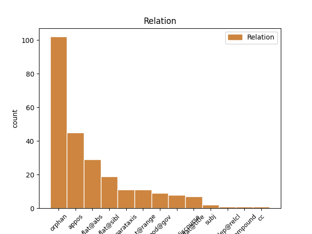
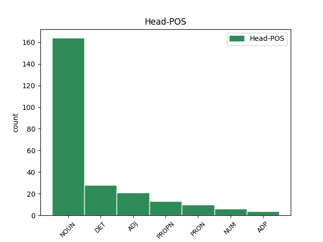
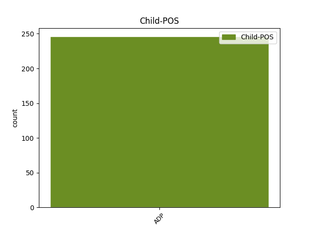

Distribution of features within this leaf



Agreement Rules sorted by frequency.
- When the dependent token is the appositional modifier(appos) of the head token, and the dependent token is ADP.
1 „ _ _ _ _ 0 _ _ _
2 Опис _ _ _ _ 0 _ _ _
3 Очаківського _ _ _ _ 0 _ _ _
4 степу _ _ _ _ 0 _ _ _
5 " _ _ _ _ 0 _ _ _
6 знає _ _ _ _ 0 _ _ _
7 , _ _ _ _ 0 _ _ _
8 напр _ _ _ _ 0 _ _ _
9 . _ _ _ _ 0 _ _ _
10 , _ _ _ _ 0 _ _ _
11 низку _ _ _ _ 0 _ _ _
12 шляхових _ _ _ _ 0 _ _ _
13 споруд _ _ _ _ 0 _ _ _
14 ( _ _ _ _ 0 _ _ _
15 кам’яні _ _ _ _ 0 _ _ _
16 мости _ _ _ _ 0 _ _ _
17 на _ _ _ _ 0 _ _ _
18 Тилигулі Тилигул PROPN Npmsln Animacy=Inan|Case=Loc|Gender=Masc|Number=Sing 0 _ _ _
19 , _ _ _ _ 0 _ _ _
20 Цареголі _ _ _ _ 0 _ _ _
21 , _ _ _ _ 0 _ _ _
22 Березані _ _ _ _ 0 _ _ _
23 — _ _ _ _ 0 _ _ _
24 на на ADP Spsl Case=Loc 18 appos _ Id=2vxi|LTranslit=na|Translit=na
25 головному _ _ _ _ 0 _ _ _
26 шляху _ _ _ _ 0 _ _ _
27 з _ _ _ _ 0 _ _ _
28 Бендеру _ _ _ _ 0 _ _ _
29 до _ _ _ _ 0 _ _ _
30 Очакова _ _ _ _ 0 _ _ _
31 , _ _ _ _ 0 _ _ _
32 караван _ _ _ _ 0 _ _ _
33 - _ _ _ _ 0 _ _ _
34 сараї _ _ _ _ 0 _ _ _
35 в _ _ _ _ 0 _ _ _
36 напрямку _ _ _ _ 0 _ _ _
37 з _ _ _ _ 0 _ _ _
38 Дубосар _ _ _ _ 0 _ _ _
39 до _ _ _ _ 0 _ _ _
40 Балти _ _ _ _ 0 _ _ _
41 ; _ _ _ _ 0 _ _ _
42 мапи _ _ _ _ 0 _ _ _
43 того _ _ _ _ 0 _ _ _
44 ж _ _ _ _ 0 _ _ _
45 часу _ _ _ _ 0 _ _ _
46 відзначають _ _ _ _ 0 _ _ _
47 і _ _ _ _ 0 _ _ _
48 „ _ _ _ _ 0 _ _ _
49 вами _ _ _ _ 0 _ _ _
50 “ _ _ _ _ 0 _ _ _
51 , _ _ _ _ 0 _ _ _
52 митниці _ _ _ _ 0 _ _ _
53 в _ _ _ _ 0 _ _ _
54 північно _ _ _ _ 0 _ _ _
55 - _ _ _ _ 0 _ _ _
56 західній _ _ _ _ 0 _ _ _
57 частині _ _ _ _ 0 _ _ _
58 Очаківського _ _ _ _ 0 _ _ _
59 степу _ _ _ _ 0 _ _ _
60 на _ _ _ _ 0 _ _ _
61 польському _ _ _ _ 0 _ _ _
62 кордоні _ _ _ _ 0 _ _ _
63 . _ _ _ _ 0 _ _ _
1 У _ _ _ _ 0 _ _ _
2 дельфінарії _ _ _ _ 0 _ _ _
3 в _ _ _ _ 0 _ _ _
4 різні _ _ _ _ 0 _ _ _
5 роки _ _ _ _ 0 _ _ _
6 утримувалося _ _ _ _ 0 _ _ _
7 від _ _ _ _ 0 _ _ _
8 4 4 NUM Mlc-g Case=Gen|NumType=Card|Uninflect=Yes 0 _ _ _
9 до до ADP Spsg Case=Gen 8 flat@range _ Id=38y5|LTranslit=do|Translit=do
10 6 _ _ _ _ 0 _ _ _
11 дельфінів _ _ _ _ 0 _ _ _
12 походженням _ _ _ _ 0 _ _ _
13 з _ _ _ _ 0 _ _ _
14 Чорного _ _ _ _ 0 _ _ _
15 моря _ _ _ _ 0 _ _ _
16 та _ _ _ _ 0 _ _ _
17 Тихого _ _ _ _ 0 _ _ _
18 океану _ _ _ _ 0 _ _ _
19 , _ _ _ _ 0 _ _ _
20 морські _ _ _ _ 0 _ _ _
21 леви _ _ _ _ 0 _ _ _
22 та _ _ _ _ 0 _ _ _
23 морські _ _ _ _ 0 _ _ _
24 котики _ _ _ _ 0 _ _ _
25 . _ _ _ _ 0 _ _ _
1 Вона _ _ _ _ 0 _ _ _
2 виявила _ _ _ _ 0 _ _ _
3 готовність _ _ _ _ 0 _ _ _
4 виплатити _ _ _ _ 0 _ _ _
5 за _ _ _ _ 0 _ _ _
6 93%-й _ _ _ _ 0 _ _ _
7 пакет _ _ _ _ 0 _ _ _
8 акцій _ _ _ _ 0 _ _ _
9 « _ _ _ _ 0 _ _ _
10 Криворіжсталі _ _ _ _ 0 _ _ _
11 » _ _ _ _ 0 _ _ _
12 24 _ _ _ _ 0 _ _ _
13 млрд _ _ _ _ 0 _ _ _
14 . _ _ _ _ 0 _ _ _
15 200 _ _ _ _ 0 _ _ _
16 млн _ _ _ _ 0 _ _ _
17 ₴ _ _ _ _ 0 _ _ _
18 . _ _ _ _ 0 _ _ _
19 ( _ _ _ _ 0 _ _ _
20 4 _ _ _ _ 0 _ _ _
21 , _ _ _ _ 0 _ _ _
22 8 _ _ _ _ 0 _ _ _
23 млрд _ _ _ _ 0 _ _ _
24 доларів _ _ _ _ 0 _ _ _
25 США _ _ _ _ 0 _ _ _
26 ) _ _ _ _ 0 _ _ _
27 , _ _ _ _ 0 _ _ _
28 що _ _ _ _ 0 _ _ _
29 в _ _ _ _ 0 _ _ _
30 2 _ _ _ _ 0 _ _ _
31 , _ _ _ _ 0 _ _ _
32 4 _ _ _ _ 0 _ _ _
33 рази _ _ _ _ 0 _ _ _
34 перевищує _ _ _ _ 0 _ _ _
35 стартову _ _ _ _ 0 _ _ _
36 ціну _ _ _ _ 0 _ _ _
37 і _ _ _ _ 0 _ _ _
38 в в ADP Spsa Case=Acc 44 orphan _ Id=39mf|LTranslit=v|Translit=v
39 5 _ _ _ _ 0 _ _ _
40 , _ _ _ _ 0 _ _ _
41 7 _ _ _ _ 0 _ _ _
42 рази _ _ _ _ 0 _ _ _
43 — _ _ _ _ 0 _ _ _
44 суму сума NOUN Ncfsan Animacy=Inan|Case=Acc|Gender=Fem|Number=Sing 0 _ _ _
45 , _ _ _ _ 0 _ _ _
46 отриману _ _ _ _ 0 _ _ _
47 за _ _ _ _ 0 _ _ _
48 підприємство _ _ _ _ 0 _ _ _
49 2004 _ _ _ _ 0 _ _ _
50 року _ _ _ _ 0 _ _ _
51 . _ _ _ _ 0 _ _ _
1 У _ _ _ _ 0 _ _ _
2 дельфінарії _ _ _ _ 0 _ _ _
3 в _ _ _ _ 0 _ _ _
4 різні _ _ _ _ 0 _ _ _
5 роки _ _ _ _ 0 _ _ _
6 утримувалося _ _ _ _ 0 _ _ _
7 від від ADP Spsg Case=Gen 11 mod@gov _ Id=38y3|LTranslit=vid|Translit=vid
8 4 _ _ _ _ 0 _ _ _
9 до _ _ _ _ 0 _ _ _
10 6 _ _ _ _ 0 _ _ _
11 дельфінів дельфін NOUN Ncmpgy Animacy=Anim|Case=Gen|Gender=Masc|Number=Plur 0 _ _ _
12 походженням _ _ _ _ 0 _ _ _
13 з _ _ _ _ 0 _ _ _
14 Чорного _ _ _ _ 0 _ _ _
15 моря _ _ _ _ 0 _ _ _
16 та _ _ _ _ 0 _ _ _
17 Тихого _ _ _ _ 0 _ _ _
18 океану _ _ _ _ 0 _ _ _
19 , _ _ _ _ 0 _ _ _
20 морські _ _ _ _ 0 _ _ _
21 леви _ _ _ _ 0 _ _ _
22 та _ _ _ _ 0 _ _ _
23 морські _ _ _ _ 0 _ _ _
24 котики _ _ _ _ 0 _ _ _
25 . _ _ _ _ 0 _ _ _
1 На _ _ _ _ 0 _ _ _
2 вул _ _ _ _ 0 _ _ _
3 Короленка _ _ _ _ 0 _ _ _
4 ( _ _ _ _ 0 _ _ _
5 площа _ _ _ _ 0 _ _ _
6 – _ _ _ _ 0 _ _ _
7 469 _ _ _ _ 0 _ _ _
8 кв _ _ _ _ 0 _ _ _
9 . _ _ _ _ 0 _ _ _
10 м _ _ _ _ 0 _ _ _
11 . _ _ _ _ 0 _ _ _
12 ) _ _ _ _ 0 _ _ _
13 відповідно _ _ _ _ 0 _ _ _
14 159 _ _ _ _ 0 _ _ _
15 грн _ _ _ _ 0 _ _ _
16 на _ _ _ _ 0 _ _ _
17 день _ _ _ _ 0 _ _ _
18 і _ _ _ _ 0 _ _ _
19 4761 _ _ _ _ 0 _ _ _
20 грн грн NOUN Y Abbr=Yes|Animacy=Inan|Case=Acc|Gender=Fem|Number=Sing|Uninflect=Yes 0 _ _ _
21 на на ADP Spsa Case=Acc 20 flat@sibl _ Id=2ras|LTranslit=na|Translit=na
22 місяць _ _ _ _ 0 _ _ _
23 . _ _ _ _ 0 _ _ _
1 Далі _ _ _ _ 0 _ _ _
2 вона _ _ _ _ 0 _ _ _
3 бере _ _ _ _ 0 _ _ _
4 кожен _ _ _ _ 0 _ _ _
5 з _ _ _ _ 0 _ _ _
6 5-ти _ _ _ _ 0 _ _ _
7 елементів _ _ _ _ 0 _ _ _
8 , _ _ _ _ 0 _ _ _
9 і _ _ _ _ 0 _ _ _
10 вставляє _ _ _ _ 0 _ _ _
11 їх _ _ _ _ 0 _ _ _
12 в _ _ _ _ 0 _ _ _
13 дерево _ _ _ _ 0 _ _ _
14 кожен кожний DET Pg--mnsaa Animacy=Inan|Case=Acc|Gender=Masc|Number=Sing|PronType=Tot|Variant=Short 0 _ _ _
15 в в ADP Spsa Case=Acc 14 flat@abs _ Id=1seb|LTranslit=v|Translit=v
16 свій _ _ _ _ 0 _ _ _
17 вузол _ _ _ _ 0 _ _ _
18 . _ _ _ _ 0 _ _ _
1 Водночас _ _ _ _ 0 _ _ _
2 26 _ _ _ _ 0 _ _ _
3 , _ _ _ _ 0 _ _ _
4 2 _ _ _ _ 0 _ _ _
5 % _ _ _ _ 0 _ _ _
6 — _ _ _ _ 0 _ _ _
7 на на ADP Spsa Case=Acc 0 _ _ _
8 їжу _ _ _ _ 0 _ _ _
9 , _ _ _ _ 0 _ _ _
10 37 _ _ _ _ 0 _ _ _
11 , _ _ _ _ 0 _ _ _
12 9 _ _ _ _ 0 _ _ _
13 % _ _ _ _ 0 _ _ _
14 — _ _ _ _ 0 _ _ _
15 на на ADP Spsa Case=Acc 7 parataxis _ Id=270t|LTranslit=na|Translit=na
16 одяг _ _ _ _ 0 _ _ _
17 та _ _ _ _ 0 _ _ _
18 взуття _ _ _ _ 0 _ _ _
19 . _ _ _ _ 0 _ _ _
1 У _ _ _ _ 0 _ _ _
2 моральному _ _ _ _ 0 _ _ _
3 кодексі _ _ _ _ 0 _ _ _
4 Лесі _ _ _ _ 0 _ _ _
5 Українки _ _ _ _ 0 _ _ _
6 такі _ _ _ _ 0 _ _ _
7 роздуми _ _ _ _ 0 _ _ _
8 й _ _ _ _ 0 _ _ _
9 вагання _ _ _ _ 0 _ _ _
10 молодшого _ _ _ _ 0 _ _ _
11 колеги _ _ _ _ 0 _ _ _
12 по _ _ _ _ 0 _ _ _
13 цеху _ _ _ _ 0 _ _ _
14 ( _ _ _ _ 0 _ _ _
15 до до ADP Spsg Case=Gen 20 parataxis@discourse _ Id=01lv|LTranslit=do|Translit=do
16 речі _ _ _ _ 0 _ _ _
17 , _ _ _ _ 0 _ _ _
18 дуже _ _ _ _ 0 _ _ _
19 прихильно _ _ _ _ 0 _ _ _
20 підтриманого підтриманий ADJ Ap-msgf-ep Aspect=Perf|Case=Gen|Gender=Masc|Number=Sing|VerbForm=Part|Voice=Pass 0 _ _ _
21 земляками _ _ _ _ 0 _ _ _
22 при _ _ _ _ 0 _ _ _
23 початку _ _ _ _ 0 _ _ _
24 творчого _ _ _ _ 0 _ _ _
25 шляху _ _ _ _ 0 _ _ _
26 ; _ _ _ _ 0 _ _ _
27 Леся _ _ _ _ 0 _ _ _
28 Українка _ _ _ _ 0 _ _ _
29 присвятила _ _ _ _ 0 _ _ _
30 Винниченкові _ _ _ _ 0 _ _ _
31 розлогу _ _ _ _ 0 _ _ _
32 аналітичну _ _ _ _ 0 _ _ _
33 статтю _ _ _ _ 0 _ _ _
34 , _ _ _ _ 0 _ _ _
35 вилучену _ _ _ _ 0 _ _ _
36 , _ _ _ _ 0 _ _ _
37 зрозуміло _ _ _ _ 0 _ _ _
38 , _ _ _ _ 0 _ _ _
39 з _ _ _ _ 0 _ _ _
40 академічного _ _ _ _ 0 _ _ _
41 радянського _ _ _ _ 0 _ _ _
42 зібрання _ _ _ _ 0 _ _ _
43 творів _ _ _ _ 0 _ _ _
44 ) _ _ _ _ 0 _ _ _
45 мали _ _ _ _ 0 _ _ _
46 сприйматися _ _ _ _ 0 _ _ _
47 у _ _ _ _ 0 _ _ _
48 кращому _ _ _ _ 0 _ _ _
49 разі _ _ _ _ 0 _ _ _
50 як _ _ _ _ 0 _ _ _
51 безвідповідальні _ _ _ _ 0 _ _ _
52 . _ _ _ _ 0 _ _ _
1 Увести _ _ _ _ 0 _ _ _
2 в _ _ _ _ 0 _ _ _
3 дію _ _ _ _ 0 _ _ _
4 рішення рішення NOUN Ncnsan Animacy=Inan|Case=Acc|Gender=Neut|Number=Sing 0 _ _ _
5 Ради _ _ _ _ 0 _ _ _
6 національної _ _ _ _ 0 _ _ _
7 безпеки _ _ _ _ 0 _ _ _
8 і _ _ _ _ 0 _ _ _
9 оборони _ _ _ _ 0 _ _ _
10 України _ _ _ _ 0 _ _ _
11 від _ _ _ _ 0 _ _ _
12 10 _ _ _ _ 0 _ _ _
13 липня _ _ _ _ 0 _ _ _
14 2017 _ _ _ _ 0 _ _ _
15 року _ _ _ _ 0 _ _ _
16 « _ _ _ _ 0 _ _ _
17 Про про ADP Spsa Case=Acc 4 flat@title _ Id=2z6a|LTranslit=pro|Translit=Pro
18 стан _ _ _ _ 0 _ _ _
19 виконання _ _ _ _ 0 _ _ _
20 рішення _ _ _ _ 0 _ _ _
21 Ради _ _ _ _ 0 _ _ _
22 національної _ _ _ _ 0 _ _ _
23 безпеки _ _ _ _ 0 _ _ _
24 і _ _ _ _ 0 _ _ _
25 оборони _ _ _ _ 0 _ _ _
26 України _ _ _ _ 0 _ _ _
27 від _ _ _ _ 0 _ _ _
28 29 _ _ _ _ 0 _ _ _
29 грудня _ _ _ _ 0 _ _ _
30 2016 _ _ _ _ 0 _ _ _
31 року _ _ _ _ 0 _ _ _
32 « _ _ _ _ 0 _ _ _
33 Про _ _ _ _ 0 _ _ _
34 загрози _ _ _ _ 0 _ _ _
35 кібербезпеці _ _ _ _ 0 _ _ _
36 держави _ _ _ _ 0 _ _ _
37 та _ _ _ _ 0 _ _ _
38 невідкладні _ _ _ _ 0 _ _ _
39 заходи _ _ _ _ 0 _ _ _
40 з _ _ _ _ 0 _ _ _
41 їх _ _ _ _ 0 _ _ _
42 нейтралізації _ _ _ _ 0 _ _ _
43 » _ _ _ _ 0 _ _ _
44 , _ _ _ _ 0 _ _ _
45 введеного _ _ _ _ 0 _ _ _
46 в _ _ _ _ 0 _ _ _
47 дію _ _ _ _ 0 _ _ _
48 Указом _ _ _ _ 0 _ _ _
49 Президента _ _ _ _ 0 _ _ _
50 України _ _ _ _ 0 _ _ _
51 від _ _ _ _ 0 _ _ _
52 13 _ _ _ _ 0 _ _ _
53 лютого _ _ _ _ 0 _ _ _
54 2017 _ _ _ _ 0 _ _ _
55 року _ _ _ _ 0 _ _ _
56 № _ _ _ _ 0 _ _ _
57 32 _ _ _ _ 0 _ _ _
58 » _ _ _ _ 0 _ _ _
59 ( _ _ _ _ 0 _ _ _
60 додається _ _ _ _ 0 _ _ _
61 , _ _ _ _ 0 _ _ _
62 підпункт _ _ _ _ 0 _ _ _
63 1 _ _ _ _ 0 _ _ _
64 пункту _ _ _ _ 0 _ _ _
65 2 _ _ _ _ 0 _ _ _
66 , _ _ _ _ 0 _ _ _
67 пункти _ _ _ _ 0 _ _ _
68 4 _ _ _ _ 0 _ _ _
69 , _ _ _ _ 0 _ _ _
70 5 _ _ _ _ 0 _ _ _
71 - _ _ _ _ 0 _ _ _
72 для _ _ _ _ 0 _ _ _
73 службового _ _ _ _ 0 _ _ _
74 користування _ _ _ _ 0 _ _ _
75 ) _ _ _ _ 0 _ _ _
76 . _ _ _ _ 0 _ _ _
1 Близько близько ADP Spsg Case=Gen 5 compound _ Id=1w2k|LTranslit=blyźko|Translit=Blyźko
2 1 _ _ _ _ 0 _ _ _
3 , _ _ _ _ 0 _ _ _
4 8 _ _ _ _ 0 _ _ _
5 млн млн NOUN Y Abbr=Yes|Animacy=Inan|Case=Gen|Gender=Masc|Number=Sing|NumType=Card|Uninflect=Yes 0 _ _ _
6 британців _ _ _ _ 0 _ _ _
7 , _ _ _ _ 0 _ _ _
8 які _ _ _ _ 0 _ _ _
9 підписали _ _ _ _ 0 _ _ _
10 згадану _ _ _ _ 0 _ _ _
11 петицію _ _ _ _ 0 _ _ _
12 , _ _ _ _ 0 _ _ _
13 закликали _ _ _ _ 0 _ _ _
14 також _ _ _ _ 0 _ _ _
15 не _ _ _ _ 0 _ _ _
16 проводити _ _ _ _ 0 _ _ _
17 традиційних _ _ _ _ 0 _ _ _
18 церемоній _ _ _ _ 0 _ _ _
19 , _ _ _ _ 0 _ _ _
20 як _ _ _ _ 0 _ _ _
21 - _ _ _ _ 0 _ _ _
22 от _ _ _ _ 0 _ _ _
23 бенкет _ _ _ _ 0 _ _ _
24 , _ _ _ _ 0 _ _ _
25 артилерійський _ _ _ _ 0 _ _ _
26 салют _ _ _ _ 0 _ _ _
27 і _ _ _ _ 0 _ _ _
28 зустріч _ _ _ _ 0 _ _ _
29 гостя _ _ _ _ 0 _ _ _
30 в _ _ _ _ 0 _ _ _
31 палаці _ _ _ _ 0 _ _ _
32 , _ _ _ _ 0 _ _ _
33 з _ _ _ _ 0 _ _ _
34 огляду _ _ _ _ 0 _ _ _
35 на _ _ _ _ 0 _ _ _
36 « _ _ _ _ 0 _ _ _
37 загальновідомий _ _ _ _ 0 _ _ _
38 сексизм _ _ _ _ 0 _ _ _
39 та _ _ _ _ 0 _ _ _
40 вульгарність _ _ _ _ 0 _ _ _
41 » _ _ _ _ 0 _ _ _
42 Трампа _ _ _ _ 0 _ _ _
43 . _ _ _ _ 0 _ _ _
Disagree Examples:
1 Однак _ _ _ _ 0 _ _ _
2 подосі _ _ _ _ 0 _ _ _
3 така _ _ _ _ 0 _ _ _
4 конче _ _ _ _ 0 _ _ _
5 необхідна _ _ _ _ 0 _ _ _
6 канонотворча _ _ _ _ 0 _ _ _
7 робота _ _ _ _ 0 _ _ _
8 вповні _ _ _ _ 0 _ _ _
9 не _ _ _ _ 0 _ _ _
10 виконана виконаний ADJ Ap-fsns-ep Aspect=Perf|Case=Nom|Gender=Fem|Number=Sing|VerbForm=Part|Voice=Pass 0 _ _ _
11 , _ _ _ _ 0 _ _ _
12 і _ _ _ _ 0 _ _ _
13 то _ _ _ _ 0 _ _ _
14 навіть _ _ _ _ 0 _ _ _
15 на на ADP Spsl Case=Loc 10 parataxis _ Id=005x|LTranslit=na|Translit=na
16 рівні _ _ _ _ 0 _ _ _
17 задовільної _ _ _ _ 0 _ _ _
18 публікації _ _ _ _ 0 _ _ _
19 всього _ _ _ _ 0 _ _ _
20 корпусу _ _ _ _ 0 _ _ _
21 текстів _ _ _ _ 0 _ _ _
22 хоча _ _ _ _ 0 _ _ _
23 б _ _ _ _ 0 _ _ _
24 першорядних _ _ _ _ 0 _ _ _
25 класиків _ _ _ _ 0 _ _ _
26 . _ _ _ _ 0 _ _ _
1 Найперш _ _ _ _ 0 _ _ _
2 барикада _ _ _ _ 0 _ _ _
3 мала _ _ _ _ 0 _ _ _
4 би _ _ _ _ 0 _ _ _
5 перегородити _ _ _ _ 0 _ _ _
6 затишну _ _ _ _ 0 _ _ _
7 вітальню _ _ _ _ 0 _ _ _
8 косачівського _ _ _ _ 0 _ _ _
9 дому _ _ _ _ 0 _ _ _
10 , _ _ _ _ 0 _ _ _
11 бо _ _ _ _ 0 _ _ _
12 , _ _ _ _ 0 _ _ _
13 як _ _ _ _ 0 _ _ _
14 дізнаємося _ _ _ _ 0 _ _ _
15 з _ _ _ _ 0 _ _ _
16 академічних _ _ _ _ 0 _ _ _
17 пояснень _ _ _ _ 0 _ _ _
18 , _ _ _ _ 0 _ _ _
19 Ольга _ _ _ _ 0 _ _ _
20 Драгоманова _ _ _ _ 0 _ _ _
21 - _ _ _ _ 0 _ _ _
22 Косач _ _ _ _ 0 _ _ _
23 « _ _ _ _ 0 _ _ _
24 стояла _ _ _ _ 0 _ _ _
25 на _ _ _ _ 0 _ _ _
26 ліберально _ _ _ _ 0 _ _ _
27 - _ _ _ _ 0 _ _ _
28 буржуазних _ _ _ _ 0 _ _ _
29 позиціях _ _ _ _ 0 _ _ _
30 » _ _ _ _ 0 _ _ _
31 , _ _ _ _ 0 _ _ _
32 а _ _ _ _ 0 _ _ _
33 її _ _ _ _ 0 _ _ _
34 донька донька NOUN Ncfsny Animacy=Anim|Case=Nom|Gender=Fem|Number=Sing 0 _ _ _
35 – _ _ _ _ 0 _ _ _
36 на на ADP Spsl Case=Loc 34 orphan _ Id=00c8|LTranslit=na|Translit=na
37 марксистських _ _ _ _ 0 _ _ _
38 . _ _ _ _ 0 _ _ _
1 І _ _ _ _ 0 _ _ _
2 друкувалася _ _ _ _ 0 _ _ _
3 завжди _ _ _ _ 0 _ _ _
4 у _ _ _ _ 0 _ _ _
5 ворожих _ _ _ _ 0 _ _ _
6 « _ _ _ _ 0 _ _ _
7 буржуазно _ _ _ _ 0 _ _ _
8 - _ _ _ _ 0 _ _ _
9 націоналістичних _ _ _ _ 0 _ _ _
10 » _ _ _ _ 0 _ _ _
11 виданнях _ _ _ _ 0 _ _ _
12 , _ _ _ _ 0 _ _ _
13 як _ _ _ _ 0 _ _ _
14 - _ _ _ _ 0 _ _ _
15 от _ _ _ _ 0 _ _ _
16 , _ _ _ _ 0 _ _ _
17 на на ADP Spsa Case=Acc 22 parataxis@discourse _ Id=00qa|LTranslit=na|Translit=na
18 думку _ _ _ _ 0 _ _ _
19 коментаторів _ _ _ _ 0 _ _ _
20 , _ _ _ _ 0 _ _ _
21 « _ _ _ _ 0 _ _ _
22 Зоря зоря NOUN Ncfsnn Animacy=Inan|Case=Nom|Gender=Fem|Number=Sing 0 _ _ _
23 » _ _ _ _ 0 _ _ _
24 , _ _ _ _ 0 _ _ _
25 « _ _ _ _ 0 _ _ _
26 Діло _ _ _ _ 0 _ _ _
27 » _ _ _ _ 0 _ _ _
28 , _ _ _ _ 0 _ _ _
29 не _ _ _ _ 0 _ _ _
30 кажучи _ _ _ _ 0 _ _ _
31 вже _ _ _ _ 0 _ _ _
32 про _ _ _ _ 0 _ _ _
33 « _ _ _ _ 0 _ _ _
34 Літературно _ _ _ _ 0 _ _ _
35 - _ _ _ _ 0 _ _ _
36 науковий _ _ _ _ 0 _ _ _
37 вісник _ _ _ _ 0 _ _ _
38 » _ _ _ _ 0 _ _ _
39 , _ _ _ _ 0 _ _ _
40 який _ _ _ _ 0 _ _ _
41 від _ _ _ _ 0 _ _ _
42 буржуазного _ _ _ _ 0 _ _ _
43 лібералізму _ _ _ _ 0 _ _ _
44 « _ _ _ _ 0 _ _ _
45 скотився _ _ _ _ 0 _ _ _
46 » _ _ _ _ 0 _ _ _
47 до _ _ _ _ 0 _ _ _
48 ідеології _ _ _ _ 0 _ _ _
49 фашизму _ _ _ _ 0 _ _ _
50 . _ _ _ _ 0 _ _ _
1 Лексему _ _ _ _ 0 _ _ _
2 « _ _ _ _ 0 _ _ _
3 кацапи _ _ _ _ 0 _ _ _
4 » _ _ _ _ 0 _ _ _
5 з _ _ _ _ 0 _ _ _
6 листів _ _ _ _ 0 _ _ _
7 якнайпослідовніше _ _ _ _ 0 _ _ _
8 вичищали _ _ _ _ 0 _ _ _
9 , _ _ _ _ 0 _ _ _
10 між між ADP Spsi Case=Ins 23 cc _ Id=01bm|LTranslit=miž|Translit=miž
11 тим _ _ _ _ 0 _ _ _
12 погордливо _ _ _ _ 0 _ _ _
13 - _ _ _ _ 0 _ _ _
14 зневажливе _ _ _ _ 0 _ _ _
15 ставлення _ _ _ _ 0 _ _ _
16 до _ _ _ _ 0 _ _ _
17 злодійкуватого _ _ _ _ 0 _ _ _
18 сусіда _ _ _ _ 0 _ _ _
19 у _ _ _ _ 0 _ _ _
20 Лесі _ _ _ _ 0 _ _ _
21 Українки _ _ _ _ 0 _ _ _
22 не _ _ _ _ 0 _ _ _
23 обмовка обмовка NOUN Ncfsnn Animacy=Inan|Case=Nom|Gender=Fem|Number=Sing 0 _ _ _
24 і _ _ _ _ 0 _ _ _
25 не _ _ _ _ 0 _ _ _
26 « _ _ _ _ 0 _ _ _
27 помилка _ _ _ _ 0 _ _ _
28 » _ _ _ _ 0 _ _ _
29 ( _ _ _ _ 0 _ _ _
30 у _ _ _ _ 0 _ _ _
31 чому _ _ _ _ 0 _ _ _
32 трохи _ _ _ _ 0 _ _ _
33 знічено _ _ _ _ 0 _ _ _
34 переконували _ _ _ _ 0 _ _ _
35 нас _ _ _ _ 0 _ _ _
36 радянські _ _ _ _ 0 _ _ _
37 редактори _ _ _ _ 0 _ _ _
38 ) _ _ _ _ 0 _ _ _
39 , _ _ _ _ 0 _ _ _
40 а _ _ _ _ 0 _ _ _
41 таки _ _ _ _ 0 _ _ _
42 ж _ _ _ _ 0 _ _ _
43 незмінна _ _ _ _ 0 _ _ _
44 позиція _ _ _ _ 0 _ _ _
45 . _ _ _ _ 0 _ _ _
1 За за ADP Spsi Case=Ins 19 parataxis@discourse _ Id=01pw|LTranslit=za|Translit=Za
2 Лесею _ _ _ _ 0 _ _ _
3 Українкою _ _ _ _ 0 _ _ _
4 , _ _ _ _ 0 _ _ _
5 творчість _ _ _ _ 0 _ _ _
6 із _ _ _ _ 0 _ _ _
7 чужого _ _ _ _ 0 _ _ _
8 примусу _ _ _ _ 0 _ _ _
9 , _ _ _ _ 0 _ _ _
10 підлаштована _ _ _ _ 0 _ _ _
11 під _ _ _ _ 0 _ _ _
12 смаки _ _ _ _ 0 _ _ _
13 замовника _ _ _ _ 0 _ _ _
14 , _ _ _ _ 0 _ _ _
15 – _ _ _ _ 0 _ _ _
16 це _ _ _ _ 0 _ _ _
17 ще _ _ _ _ 0 _ _ _
18 й _ _ _ _ 0 _ _ _
19 зрада зрада NOUN Ncfsnn Animacy=Inan|Case=Nom|Gender=Fem|Number=Sing 0 _ _ _
20 Богом _ _ _ _ 0 _ _ _
21 даного _ _ _ _ 0 _ _ _
22 таланту _ _ _ _ 0 _ _ _
23 . _ _ _ _ 0 _ _ _